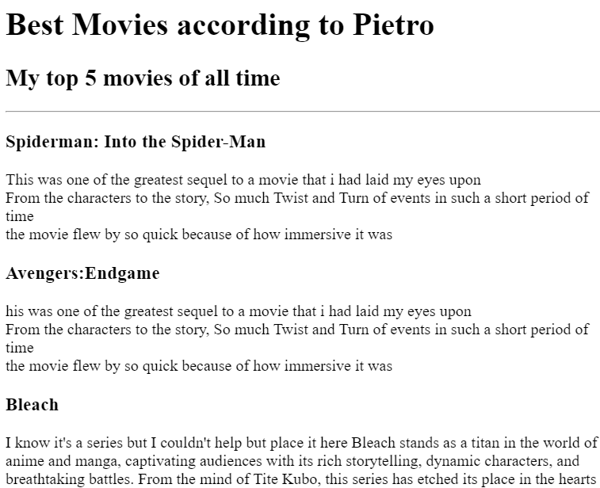

My Portofolio
I'm an upcoming full stack web developer and a mobile developer, I'll be making changes to this website dynamically with the progress I've made so far on my journey
These are some of the projects I've worked on so far:
Movie Ranking Project

My birthday project

Image practice project

Contact me
About me